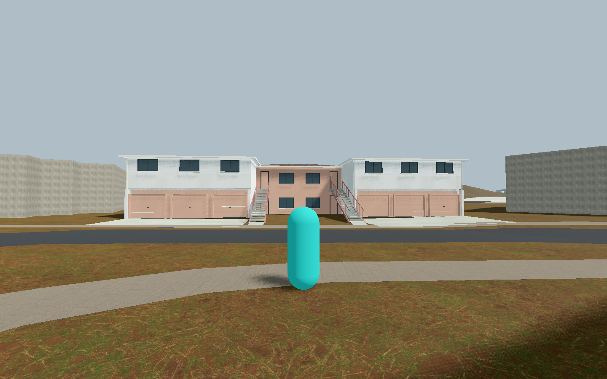
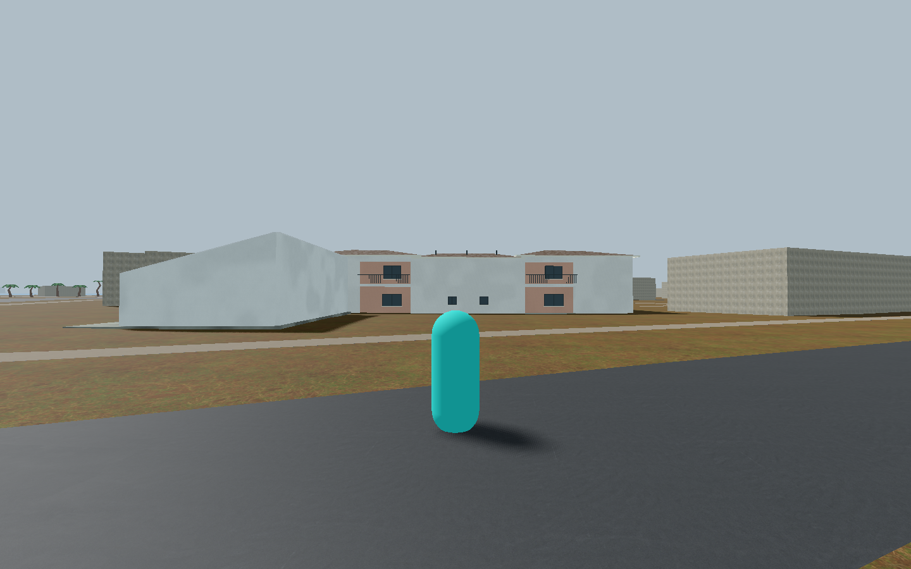
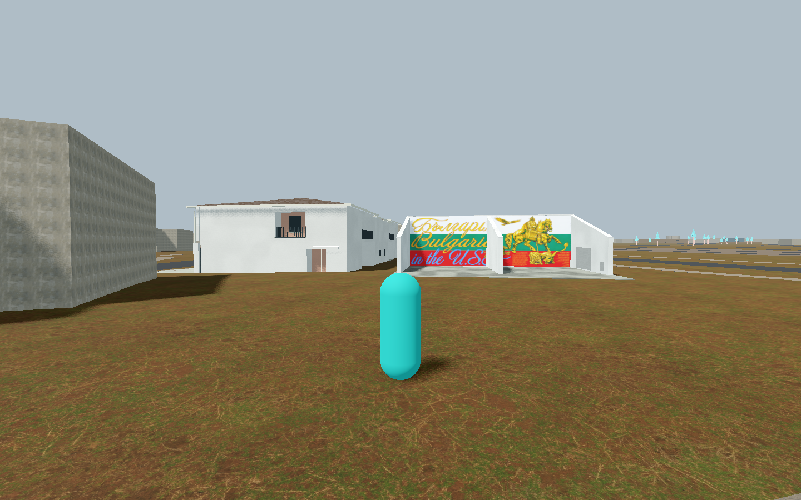

Three original native captures from the actual source world. Building placement is adapted to frozen OSM w95934121 and dated exterior photographs. The court is an unmapped, reference-supported landmark; its dimensions and placement are inferred. No surveyed or as-built accuracy is claimed.
Independent visual review passed these views. The subsequent hidden-only upper stair ramp correction leaves their visible geometry and materials unchanged. Actual source-world walking up and down both stair flights, court entry and exit, and spray checks passed in upper-junction-001. Integrated in the current game world; independent current signed-release checks passed. These images add no recognition credit.
Release checks ran on Apple M2 with Metal. The first owner smoke run reached its test-only 60-second startup deadline; the unchanged repeat and independent signed run passed. That deadline applies only to the smoke test, not ordinary gameplay. Cold-start performance and M1 Pro performance are not established.
Archive README and source credits · Original standalone gallery


